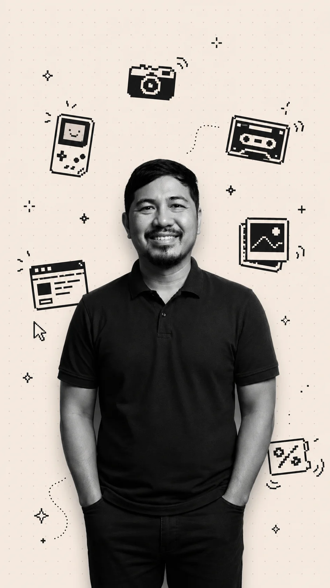
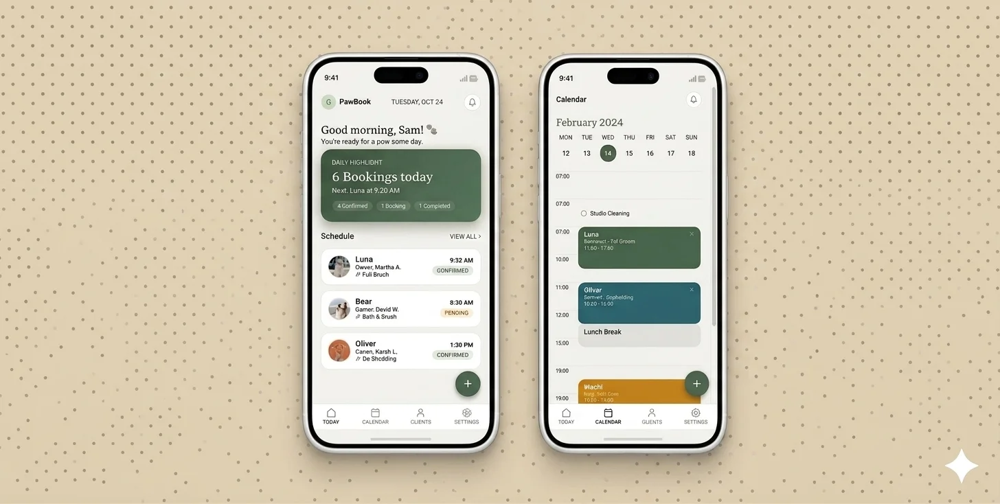
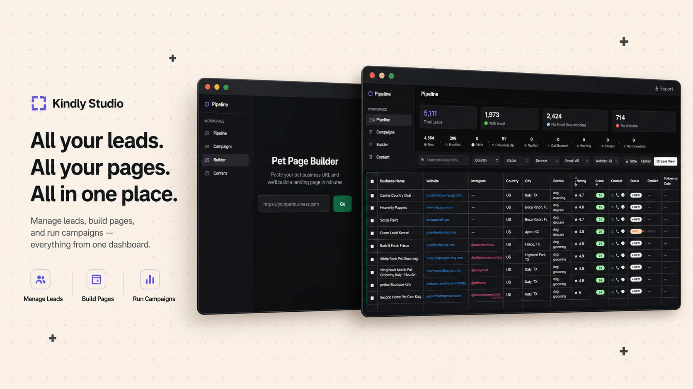
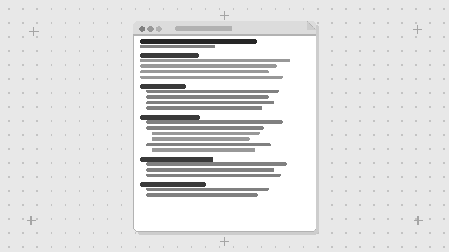
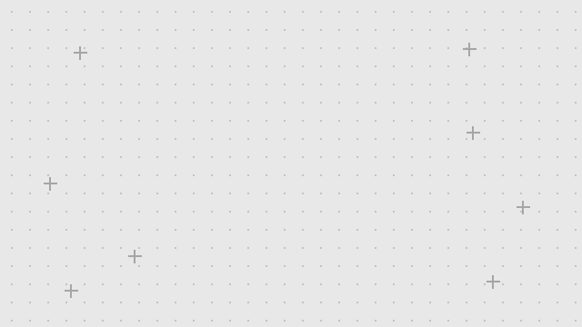
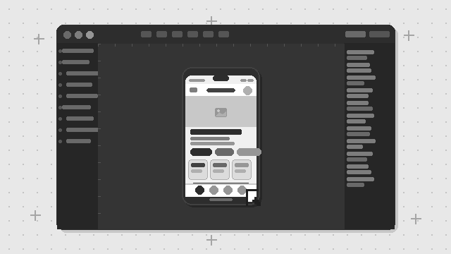
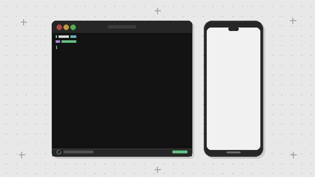
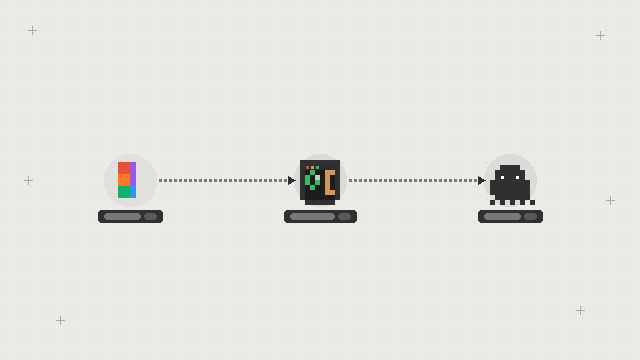

Senior Product Designer (UI/UX) · AI-Augmented Design
10+ years in product design — PRDs to prototypes to dev handoff. Now incorporating AI into every step: faster wireframes, smarter systems, prompt-to-prototype workflows.

Selected Work
Projects that shipped.
A mix of live products and concept projects — SaaS, AI tools, mobile, and web.
Streamlining Lesson Planning for Philippine Public School Teachers
An AI-powered tool concept that helps teachers generate structured, curriculum-aligned lesson plans in minutes — reducing planning time and letting teachers focus on teaching.
Reducing Discovery Friction from 3 Steps to Zero
Redesigned e27's AI discovery assistant from a 3-step menu (EVI) into an instant daily briefing (NEXUS). Surfaced personalised news, trending startups, and featured events on first open — zero clicks to value.

Simplifying Appointment Booking for Solo Pet Groomers
A mobile booking app for solo pet groomers — replacing WhatsApp and paper diaries with dual booking paths (manual + WhatsApp bot), an approval gate, daily dashboard assistant, and automated SMS follow-ups. Conceived and built end-to-end as an AI-augmented concept project.

Scaling Agency Output from 1 to 10
Built a full agency automation system — lead gen across 4 countries, AI-personalised outreach, a 16-agent conversion-first website builder, and a dashboard to run it all. One person, output of ten.
Process
How I Design with AI, Figma, and Code
I move fast without sacrificing quality by combining product thinking, AI, and a solid design system. This keeps you and your engineers aligned from PRD to working product.

Understand & Frame the Problem
PRD with constraints, risks, and success metrics upfront.

AI‑Accelerated First Draft
AI generates an interactive first draft from the PRD using your design system.

Refine the Experience in Figma
Iterate layouts, states, and interactions with real components and stakeholder feedback.

Build Prototype & Test with Users
Turn refined flows into a working prototype, then validate with real users before engineering commits.

Automated Dev Handoff
MCP agent auto-generates spec sheets from Figma — measurements, tokens, states, and notes.
What I Do
The full product design journey.
From the first brief to the final handoff — I cover everything in between.
I work with CEOs and product leads to define goals, user needs, success metrics, and scope — before a single wireframe is drawn.
Low to high fidelity, fast — then validated with real users. I prototype with Figma and AI tools, then test with Hotjar, Maze, and session recordings to ship with confidence.
Clean, consistent interfaces with reusable components — built to scale with your SaaS platform. 10+ design systems shipped across AI products and web apps.
I speak developer. Tight specs, organized Figma files, and direct collaboration with engineers to make sure what gets built matches what was designed.
I design AI-driven product experiences — generative AI interfaces, LLM-powered tools, prompt UX, and conversational AI flows that feel intuitive, not robotic.
Native mobile UX following Apple HIG and Material Design guidelines. Platform-native feel on both, consistent product identity across both.
About
10+ years of design, start to finish.
I'm John — a Senior Product Designer (UI/UX) with 10+ years in product design across SaaS platforms, web apps, and mobile.
I've worked directly with CEOs, product leads, and dev teams across startups and growing companies. I handle the full design journey: from PRDs and research through to UI design, design systems, and automated dev handoff.
I specialize in generative AI interfaces, LLM-powered products, and AI-accelerated design workflows using Figma and AI tools. The strategy, the decisions, the craft — that's still all human.
Based in Davao, Philippines. Available for remote UI/UX Designer roles and freelance AI product design projects worldwide.
Let's build something together.
Whether you're hiring, looking for a freelance designer, or just want to talk product — I'd love to hear from you.
Work With Me